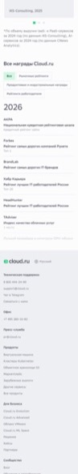
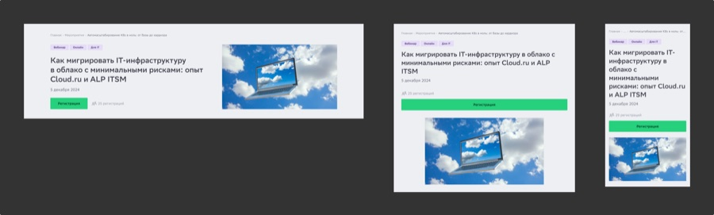
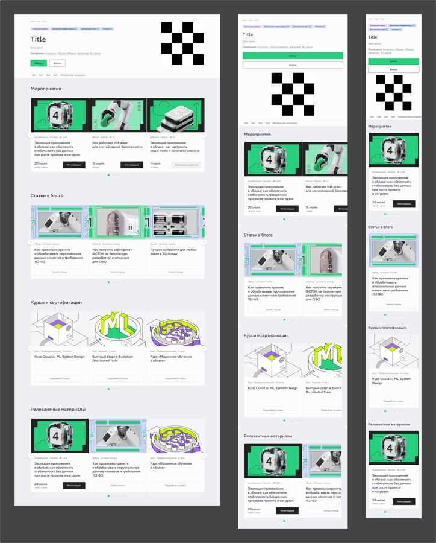
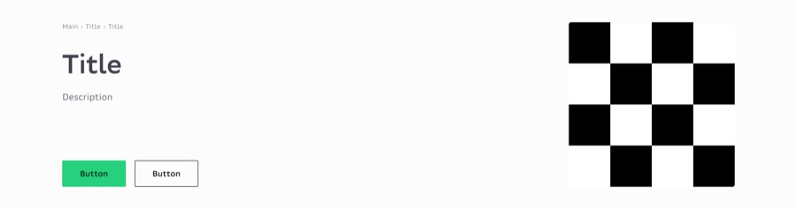

Текст кейса пока на английском. Открыть английскую версию
Cloud.ru website
Public surfaces designed for cloud.ru during my time on the site team. These were separate tasks, not one project: the awards page, the events calendar and its event pages, the blog and the AI summary block on its articles, and the reusable blocks other pages were assembled from. Each is shown as it was delivered, across the breakpoints it shipped at.
Страница наград
A page for every ranking and award the company holds. Three №1 positions lead as illustrated cards with their source and year attached, then the full list groups by year and filters by kind: market rankings, product and industry awards, employer rankings. The hero says which three matter most. The list is where people actually look things up.


Календарь мероприятий
The calendar of webinars, conferences, hackathons and lectures. Upcoming events lead with a registration date and a register button; past ones sit below with a recording link, filtered by service or by whether a recording exists. Between the two, a subscribe block catches anyone who found nothing to attend today.

Страница события
The page a single event gets. Format tags (webinar, online, for IT) sit above the title, so the commitment is legible before the name is read, and the registration counter sits beside the button as live social proof.

Блог и Гига-пересказ
The blog: its catalog, its article page, its author pages. The part worth showing is the summary block: a recap written by the GigaChat assistant and placed above the article so a reader can decide whether the next ten minutes are worth spending. I designed the component and specified its behaviour to the level the front-end could build from: four phases (idle, loading, streaming, done), a shimmer skeleton while the model works, sentences dissolving in one at a time at 700ms intervals, and a blue-to-green gradient wave crossing the GigaChat mark and the heading in step, three seconds out and two seconds still.


Блоки-карусели
Reusable carousel blocks for site pages, specified as a set rather than per page: card counts, states, arrow and dot behaviour, and how each degrades as the viewport narrows. Built so other designers and developers could assemble pages from them without asking.

Обложки разделов
Header banners for site sections, produced quarterly against the current brand campaign. Fixed frame, fixed type slot, variable artwork. A new quarter costs an art swap, not a redesign.

Избранные поверхности маркетингового сайта Cloud.ru. Названия событий и статей, даты, авторы и счётчики регистраций — служебное содержимое из макетов.